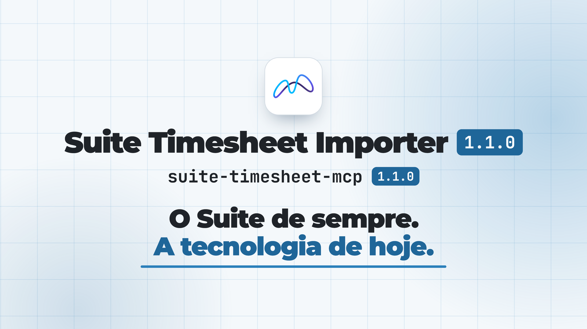

A tua Folha de Horas, mais inteligente.
Conta ao teu agente o que fizeste esta semana. Ele preenche a folha e tu só confirmas.
Servidor MCP para a extensão Suite Timesheet Importer. Funciona com qualquer agente que fale MCP: Copilot, Claude e outros.
Como funciona
O Suite não tem API para agentes. Este servidor dá-lhe uma, sem tocar no Suite: quem lê e escreve é a extensão, no teu browser, com a tua sessão.
1Pedes
Lança 4 h de hoje no Alfa: migração de dados.
Em linguagem natural, no chat do teu agente.
2O agente propõe
Lê o mês aberto, os projetos do teu dropdown e o que já está lançado, e monta a proposta com propor. Abre o painel da extensão com a pré-visualização. Nada é escrito.
3Tu aprovas
Clicas Aplicar no painel, ou aprovas a tool aplicar no teu cliente MCP. Só aí as horas são escritas.
Garantias
O que este servidor nunca faz. Detalhes, e a forma de verificar cada afirmação, em SECURITY.md.
Nunca fala com o Suite
Quem lê e escreve é a extensão, no teu browser, com a tua sessão.
Nunca escreve sem ti
Cada lançamento é uma proposta. Só é escrito quando clicas Aplicar no painel ou aprovas a tool aplicar.
Nunca submete meses
Nem muda o mês aberto na página. Escreve só no mês que tens à frente.
Só local
Escuta apenas em 127.0.0.1, guarda tudo em memória e não tem telemetria.
Instalar
Precisas de Node.js ≥ 20, de Chrome ou Edge com a extensão Suite Timesheet Importer, e da Folha de Horas do Suite aberta com sessão válida.
1Ligar a ponte na extensão
Nas Opções da extensão, liga Ligação ao servidor local (ponte MCP), clica em Guardar e aceita a permissão para http://127.0.0.1/*. Depois recarrega a Folha de Horas. É feito uma vez, à mão: sem isto a extensão nunca toca na rede local.
2Registar o servidor no teu agente
Não é preciso clonar nada: o npx descarrega o pacote e corre-o. @1 fixa a versão principal, por isso recebes as correções 1.x e nunca uma versão incompatível.
Copilot (VS Code)
code --add-mcp '{"name":"suite-timesheet","command":"npx","args":["-y","suite-timesheet-mcp@1"]}'Depois recarrega a janela. As tools aparecem no modo Agent do Copilot.
Claude Code
claude mcp add --scope user suite-timesheet -- npx -y suite-timesheet-mcp@1Claude Desktop (inclui Cowork)
Em Definições → Programador → Editar configuração (~/Library/Application Support/Claude/claude_desktop_config.json no macOS, %APPDATA%\Claude\claude_desktop_config.json no Windows):
{
"mcpServers": {
"suite-timesheet": {
"command": "npx",
"args": ["-y", "suite-timesheet-mcp@1"]
}
}
}Reinicia o Claude Desktop.
Outros agentes
O mesmo comando, por stdio. Atenção à chave do ficheiro de configuração: o VS Code usa servers, a maioria dos outros usa mcpServers.
npx -y suite-timesheet-mcp@1Se o cliente não encontrar o npx (comum em apps abertas pelo Dock, que não herdam o PATH do terminal), usa o caminho absoluto dado por which npx. No Windows, usa "command": "cmd" com "args": ["/c", "npx", "-y", "suite-timesheet-mcp@1"].
3Verificar
Pede ao agente: "consulta o estado da ponte do Suite Timesheet". A tool estado deve responder com a ponte ligada e o mês visível na página. As Opções da extensão passam a mostrar "Agente ligado há N s".
Mantém a aprovação manual da tool aplicar. Com ela em aprovação automática, qualquer proposta é escrita sem mais nenhuma confirmação.
Usar
Lançar horas tem sempre duas fases: propor calcula o plano e abre o painel; depois confirmas no painel ou aprovas aplicar. Linhas trancadas e propostas bloqueadas são sempre recusadas pela extensão.
Pedidos de exemplo
| pedes | tool |
|---|---|
| Quantas horas tenho lançadas este mês no Suite? | ler_mes |
| Que projetos tenho disponíveis? | projetos |
| Lança 8 h no Alfa de segunda a sexta desta semana. | propor, depois aplicar |
| Soma 2 h a hoje no Alfa, com a nota "reunião de arranque". | propor em somar |
Modos do propor
| modo | o que vem nas linhas | o que não vem |
|---|---|---|
normal | fica com o valor pedido | fica como está |
somar | Suite + pedido (negativos subtraem) | fica como está |
sobregravar | fica com o valor pedido | é apagado |
Propor duas vezes em somar duplica. Mais de 8 h num dia é só aviso. Os modos normal e somar e os comentários precisam da extensão ≥ 1.1.0.
Tools
Todas leem, preparam ou esperam, exceto aplicar: é a única que escreve, e deve ficar em aprovação manual no teu cliente MCP.
- estadoPonte ligada? Mês visível, nº de projetos, lote a correr.
- projetosProjetos do dropdown da página:
option_id, nome, trancado. - ler_mesHoras e Observações já lançadas no mês visível.
- proporCalcula o plano, abre o painel com a pré-visualização e devolve um
id. Nada é escrito. - aplicarEscreve a proposta
idno Suite através da extensão. Mantém-na em aprovação manual. - resultadoEspera pela decisão: aplicado, cancelado, erro ou pendente.
Erros
| erro | o que fazer |
|---|---|
ERR_SERVE_EM_BAIXO | O serviço local não responde. Reinicia o cliente MCP, que o arranca sozinho. |
ERR_SEM_CHROME | Abre a Folha de Horas e confirma que a ponte está ligada nas Opções. |
ERR_SEM_CONTEXTO | Recarrega a Folha de Horas: o serviço reiniciou depois de a página carregar. |
ERR_SEM_ABA | Não há nenhuma aba do Suite aberta. Abre-a ou recarrega-a. |
ERR_MES_DIFERENTE | Muda o mês na página. O MCP nunca o muda por ti. |
ERR_OCUPADO | Há uma proposta à espera no painel. Aplica-a ou cancela-a primeiro. |
ERR_LOTE_A_CORRER | Já está um lote a escrever no Suite. Espera que termine. |
ERR_SESSION | A sessão do Suite expirou. Entra outra vez. |
ERR_PROPOSTA_DESCONHECIDA | O id passado a aplicar não corresponde a nenhuma proposta pendente. |
ERR_EXTENSAO_ANTIGA | Atualiza a extensão para a 1.1.0, ou usa modo: "sobregravar". |
Lista completa em CONTRACT.md.

npx -y suite-timesheet-mcp@1Código disponível para consulta, não open source. Podes instalar e usar o pacote sem alterações, para uso pessoal ou interno da tua organização. Licença.